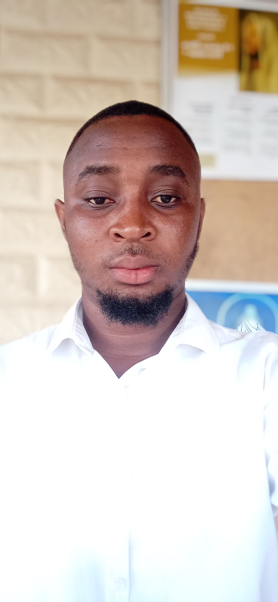

Martial N'guessan │ WDD 130

Hello! My name is Martial N'guessan, I am from Abidjan, Ivory Coast.
I live in my country with family. Currently I am online student in web programming at BYU-I.
I want to become a great web programmer in the world and maybe work for a good company,
that is one of the main reason why i joined this university.